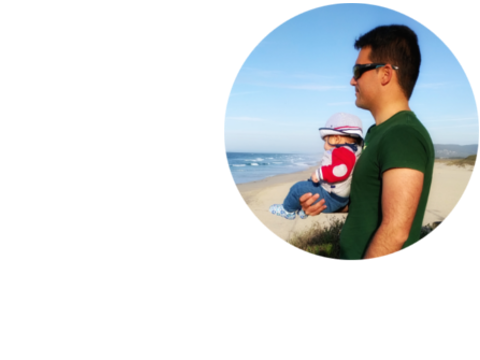
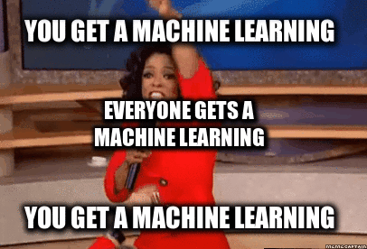
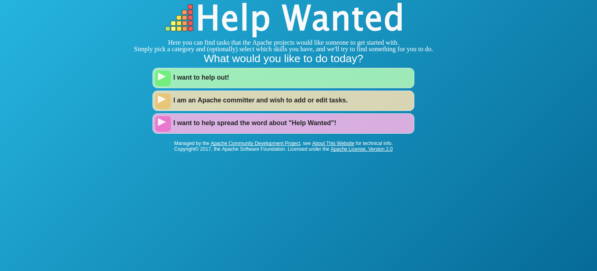
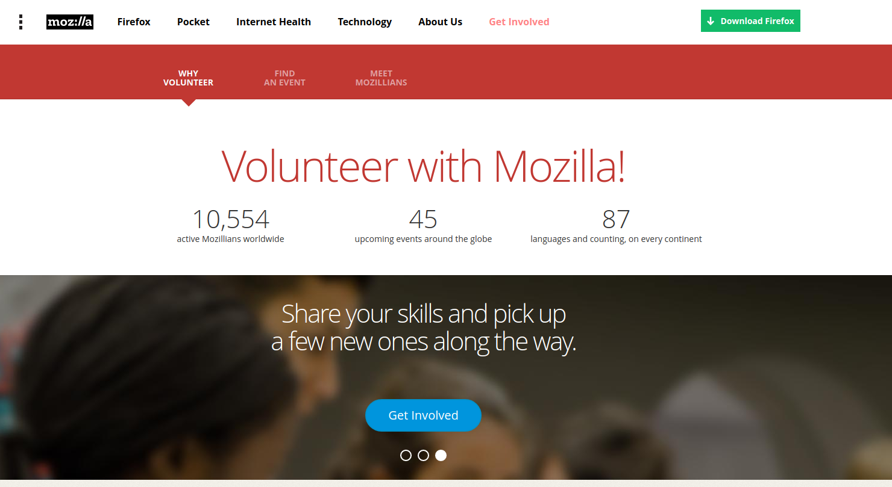
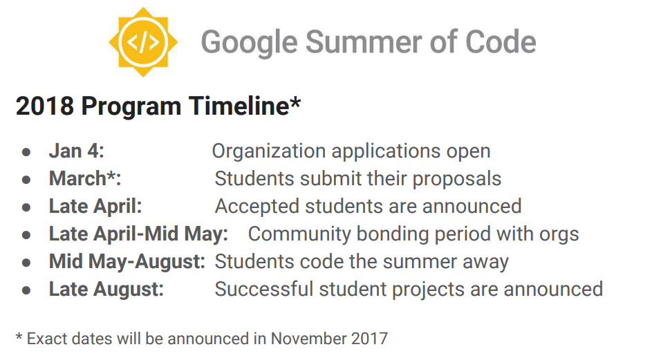

speaker = [
name: 'Antón R. Yuste',
company: 'Optare Solutions',
role: 'Technical Director',
twitter: '@antonmry',
github: 'antonmry',
extraDescription: ['VigoJUG co-organiser',
'''Misc OSS contribs (Gradle plugins,
docker images, SIP & WebRTC...)''',
'surfer wannabe',]
].each{ k, v -> println "${k}:${v}" }Adios CV, Hola Software Libre
E ti, ¿de quen ves sendo?

Desatino 1: o SPT

Conclusión
Se non se ve, non existe.
Desatino 2: ¿ágape?

Conclusión
A comunicación é unha parte moi importante de calquer traballo e, as comunidades, un bo sitio para mellorar.
Desatino 3: inglis, pitinglis
Conclusión
Non tes que ser un Shakespeare, pero tes que manexarte co inglés.
Desatino 4: cárnicas, non gracias
Conclusión
Se non hai comunidade, ¡é mellor saír por patas!
Desatino 5: ¡eu quero ir a ventas!

Conclusión
Non é tan importante o que fas, coma con quén o fas.
Desatino 6: o bot en Go

Conclusión
Facer un proxecto persoal é unha boa forma de encontrar un bo traballo.
Desatino 7: o VigoJUG e VigoTech
Conclusión
A comunidade sempre retorna o que ti lle das, pero tes que estar positivo para velo.
Vixilancia
¿Cando foi a última vez que estiveches nunha habitación sen un micro?.
¿E se concederche un crédito dependera das tuas compras en Amazon?
¿E se o precio do teu seguro de vida dependera de cantos pasos consigas no teu contador de pasos?
¿E se o teu CV pasará o filtro dunha entrevista según o que vexas en Netflix?
Machine Learning e a ética

Apache

Mozilla (e Igalia)

GSoC

¡Gracias!
Slides:
Código:
Enlace Apache Foundation: http://apache.org/foundation/getinvolved.html
Enlace Mozilla: https://www.mozilla.org/en-US/contribute/
Enlace Google Summer of Code: https://developers.google.com/open-source/gsoc/
Tamén podes preguntarme en twitter: @antonmry